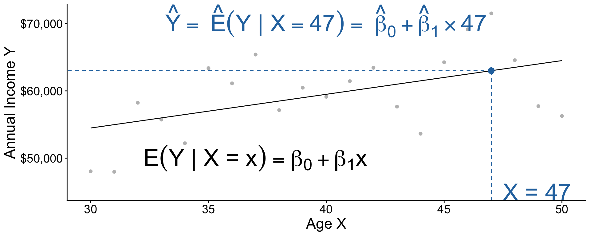
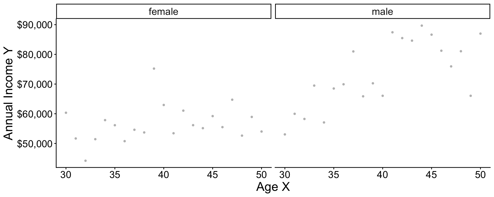
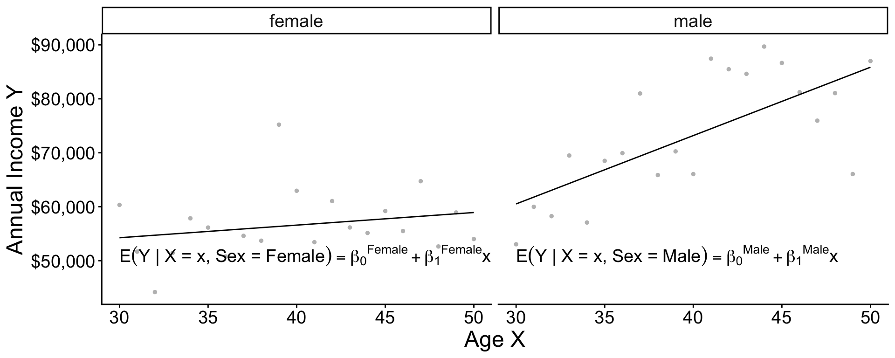
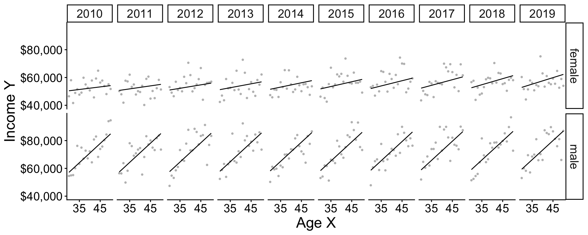

Linear Regression
UCLA Soc 114
Linear regression: Learning goals
Some things you may know
- How to fit a linear model
- How to make predictions
Data science ideas
- Why model at all?
- Penalized linear regression
Data for illustration
U.S. adult income by
- sex (male, female)
- age (30–50)
- year (2010–2019)
among those working 35+ hours per week for 50+ weeks per year. Data are simulated based on the 2010–2019 American Community Survey (ACS).
Data for illustration
The function below will simulate data
Data for illustration
# A tibble: 30,000 × 4
year age sex income
<dbl> <dbl> <chr> <dbl>
1 2011 48 female 93676.
2 2012 38 female 98805.
3 2013 38 female 52330.
# ℹ 29,997 more rowsConditional expectation
Mean of an outcome within a population subgroup.
- expectation refers to taking a mean
- conditional refers to within a subgroup
Example: Mean income among females age 47 in 2019
Task. Estimate this in our data.
Code: Find the subgroup
filter() restricts our data to cases meeting requirements:
- the
sexvariable equals the valuefemale - the
agevariable equals the value47 - the
yearvariable equals the value2019
Code: Estimate the mean
summarize() aggregates to the mean
Code: Mean in many subgroups
With group_by, you can summarize many subgroups
Conditional expectation: Math
The conditional expectation function is the subgroup mean of \(Y\) within a subgroup with the predictor values \(\vec{X} = \vec{x}\).
\[ f(\vec{x}) = \text{E}(Y\mid\vec{X} = \vec{x}) \]
To learn \(f(\vec{x})\) from data is a central task in statistical learning.
Statistical Learning by Pooling Information
A subgroup is small
Very few cases \(\rightarrow\) statistically uncertain
How to better estimate for 47-year-old females in 2019?
Pooling information across subgroups
We have many female respondents in 2019. Few are age 47.
Could we use them to learn about the 47-year-olds?
Pooling information across subgroups

Pooling information across subgroups

Pooling information across subgroups
Practice question
\[ \text{E}(Y\mid X) = \beta_0 + \beta_1 X \]
Suppose \(\beta_0 = 5\) and \(\beta_1 = 3\)
- What is the conditional mean when \(X = 0\)?
- What is the conditional mean when \(X = 1\)?
- What is the conditional mean when \(X = 2\)?
- How much does the conditional mean change for each unit increase in \(X\)?
Code
The next slides explain how to code a model in R.
Code: Simulate data
Restrict to female respondents in 2019
Code: Learn a model
modelis an object of classlmfor linear modellm()function creates this objectformulaargument is a model formulaoutcome ~ predictoris the syntax
datais a dataset containingoutcomeandpredictor
Code: Examine the learned model
Call:
lm(formula = income ~ age, data = female_2019)
Residuals:
Min 1Q Median 3Q Max
-52689 -29518 -12682 16013 400507
Coefficients:
Estimate Std. Error t value Pr(>|t|)
(Intercept) 47242.6 7518.3 6.284 4.37e-10 ***
age 233.7 185.7 1.259 0.208
---
Signif. codes: 0 '***' 0.001 '**' 0.01 '*' 0.05 '.' 0.1 ' ' 1
Residual standard error: 43360 on 1437 degrees of freedom
Multiple R-squared: 0.001102, Adjusted R-squared: 0.0004064
F-statistic: 1.585 on 1 and 1437 DF, p-value: 0.2083Code: Predict for a new X value
Recap: Our model pooled information:
- People of all ages contributed to
model - Then we predicted at a single age
Code: Three steps
- Estimate a model
- Define \(x\) to predict
- Predict \(\hat{Y} = \hat{\text{E}}(Y\mid X = x)\)
What if you were going to do this many times on different data?
Code: Three steps in a function
Code: All together
Practice question
Below is the line fit to the population data. Suppose we want to learn \(\text{E}(\log(Y)\mid X = 30)\).

- Why might this model make a misleading estimate?
- Why might the model still be useful?
Additive vs Interactive
Two models
Two models
Two models

Two models: Interaction
\[ \begin{aligned} \text{E}(Y\mid X, \text{Female}) &= \beta_0^\text{Female} + \beta_1^\text{Female}\times \text{Age} \\ \text{E}(Y\mid X, \text{Male}) &= \beta_0^\text{Male} + \beta_1^\text{Male}\times \text{Age} \\ \end{aligned} \]
Equivalently, \[\text{E}(Y \mid X, \text{Sex}) = \gamma_0 + \gamma_1(\text{Female}) + \gamma_2(\text{Age}) + \gamma_3 (\text{Age} \times \text{Female})\] . . .
where \[\begin{aligned} \gamma_0 &= \beta_0^\text{Male} &\gamma_1 &= \beta_0^\text{Female} - \beta_0^\text{Male} \\ \gamma_2 &= \beta_1^\text{Male} &\gamma_3 &= \beta_1^\text{Female} - \beta_1^\text{Male} \end{aligned}\]
Two models: Interaction in code
Generate data in 2019 that vary in both sex and age
# A tibble: 3,204 × 4
year age sex income
<dbl> <dbl> <chr> <dbl>
1 2019 41 male 50285.
2 2019 45 male 31057.
3 2019 34 male 66166.
# ℹ 3,201 more rowsTwo models: Interaction in code

Two models: Additive model in R
The + operator assumes slopes are the same across groups

Interactions make lots of terms
Call:
lm(formula = income ~ sex * age * year, data = simulated)
Residuals:
Min 1Q Median 3Q Max
-81158 -33849 -14946 15839 972817
Coefficients:
Estimate Std. Error t value Pr(>|t|)
(Intercept) 1.387e+06 2.343e+06 0.592 0.554
sexmale -1.943e+06 3.117e+06 -0.623 0.533
age -6.273e+04 5.760e+04 -1.089 0.276
year -6.680e+02 1.163e+03 -0.574 0.566
sexmale:age 6.646e+04 7.675e+04 0.866 0.386
sexmale:year 9.519e+02 1.547e+03 0.615 0.538
age:year 3.130e+01 2.859e+01 1.095 0.274
sexmale:age:year -3.247e+01 3.809e+01 -0.852 0.394
Residual standard error: 57790 on 29992 degrees of freedom
Multiple R-squared: 0.03332, Adjusted R-squared: 0.03309
F-statistic: 147.7 on 7 and 29992 DF, p-value: < 2.2e-16Interactions make lots of terms
Penalized Regression
Penalized regression
OLS is a linear model
\[\text{E}(Y\mid\vec{X}) = \beta_0 + \beta_1 X_1 + \beta_2 X_2 + \cdots\]
There are many linear models beyond OLS.
- (other ways of estimating the \(\beta\) coefficients)
Penalized regression

Penalized regression

Unpenalized regression: In math
OLS chose \(\alpha, \vec\beta\) to minimize this function: \[ \begin{aligned} \underbrace{\sum_i\left(Y_i - \hat{Y}_i\right)^2}_\text{Sum of Squared Error} \end{aligned} \] where \(\hat{Y}_i = \hat\alpha + \sum_j X_j \hat\beta_j\)
Penalized regression: In math
Penalized (ridge) regression chose \(\alpha, \vec\beta\) to minimize this function: \[ \begin{aligned} \underbrace{\sum_i\left(Y_i - \hat{Y}_i\right)^2}_\text{Sum of Squared Error} + \underbrace{\lambda \sum_{j} \beta_j^2}_\text{Penalty Term} \end{aligned} \] where \(\hat{Y}_i = \hat\alpha + \sum_j X_j \hat\beta_j\)
Penalized regression: Code
Penalized regression: Code
The glmnet package supports penalized regression
Penalized regression: Code
Create a model matrix of predictors
- Each column will correspond to a coefficient
Penalized regression: Code
Use the cv.glmnet function
Penalized regression: Code
When to use penalized regression?
- Many predictors and few observations
- High-variance estimates
- When you are willing to accept bias
- Model will be a bit wrong on average
Linear regression: Learning goals
Some things you may know
- How to fit a linear model
- How to make predictions
Data science ideas
- Why model at all?
- Penalized linear regression